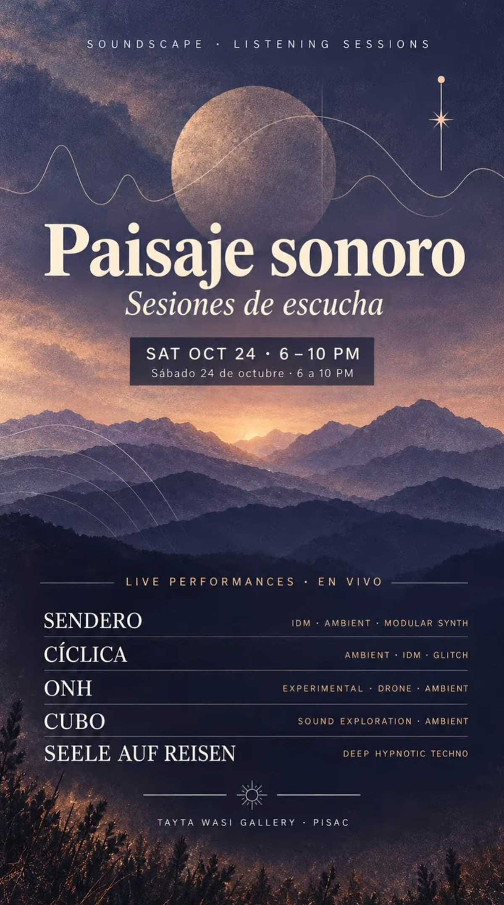

PAISAJE SONORO
fecha: 24/10/26 hora: 6pm - 10pm
lugar: Tayta Wasi Gallery,
Patacalle s/n, Pisac, Valle Sagrado de los Incas


🌄✨ PAISAJE SONORO · SESIONES DE ESCUCHA ✨🎧
Una tarde para desconectar del ruido cotidiano, abrir los sentidos y dejarse llevar por el sonido. 🌌
Este sábado 24 de octubre, Tayta Wasi Gallery · Pisac se convierte en un espacio de exploración sonora, donde la música, la experimentación y las atmósferas envolventes se encuentran para crear una experiencia única. 🌀🔊
🎶 LIVE PERFORMANCES · EN VIVO
Un recorrido por diferentes paisajes sonoros junto a:
🌿 SENDERO — IDM · Ambient · Modular Synth
🌀 CÍCLICA — Ambient · IDM · Glitch
🌫️ ONH — Experimental · Drone · Ambient
🔊 CUBO — Sound Exploration · Ambient
🖤 SEELE AUF REISEN — Deep Hypnotic Techno
Tayta Wasi Gallery abre su espacio a una experiencia dedicada a la escucha, la exploración y la experimentación sonora.
Paisaje sonoro propone acercarnos al sonido como una forma de expresión contemporánea: frecuencias, texturas, ambientes y vibraciones que construyen espacios para escuchar, sentir y experimentar.
Una noche para encontrarnos con el sonido desde otra perspectiva.
Desde el mediodía, el espacio también será parte de FERIA COLIBRÍ.
Y para cerrar la experiencia, Seele Auf Reisen nos llevará a un viaje profundo a través del Deep Hypnotic Techno: ritmos hipnóticos, bajos profundos, texturas envolventes y atmósferas que se despliegan lentamente, invitándote a perder la noción del tiempo y sumergirte por completo en el sonido. 🖤🌀
Más que escuchar música, se trata de sentirla, habitarla y dejar que cada frecuencia te transporte a otro lugar.
📅 Sábado 24 de octubre
🕕 6:00 PM – 10:00 PM
📍 Tayta Wasi Gallery · Pisac
Ven con la mente abierta, los sentidos despiertos y las ganas de explorar nuevas dimensiones sonoras.
Close your eyes. Feel the sound. Travel within. ✨🎧
#PaisajeSonoro #ListeningSessions #Pisac #SacredSound #DeepHypnoticTechno AmbientMusic ExperimentalMusic LiveElectronics SeeleAufReisen
LINE-UP:
Sendero
Cíclica
ONH
Cubo
Seele Auf Reisen